Kébili – Entre palmeraies et immensité saharienne
Le Gouvernorat de Kébili est une région située dans le sud-ouest de la Tunisie, connue pour son vaste désert et ses oasis. Son économie repose principalement sur l'agriculture oasienne, notamment la production de dattes "Deglet Nour", et sur l'exploitation de ressources naturelles comme le pétrole et le gaz.
Kébili est située dans le sud-ouest tunisien, à la frontière avec l'Algérie. Le paysage est caractérisé par un terrain désertique, de vastes étendues plates, des lacs salés asséchés (dont le Chott el Djerid) et des oasis fertiles.
L'histoire de Kébili est ancienne, remontant à l'Antiquité, et elle a conservé des traces archéologiques de ces époques. La région a toujours été un point stratégique et un carrefour commercial important pour les caravanes traversant le désert. Les découvertes archéologiques témoignent d'une occupation humaine continue, soulignant son rôle historique dans la région saharienne.
Profitez d'excursions en quad ou en 4x4, et d'une nuit sous tente pour une expérience immersive dans les dunes.
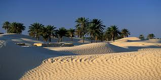
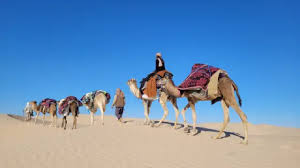
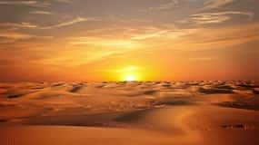
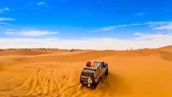
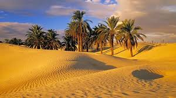
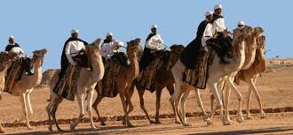
Surnommée la "porte du désert", cette ville est un point de départ idéal pour explorer le Sahara et découvrir la culture locale.
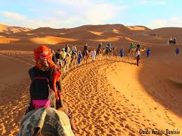
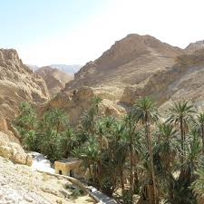
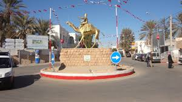
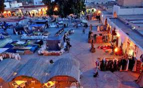
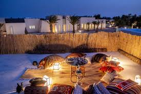
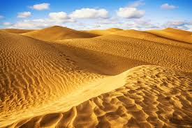
Ce vaste lac salé asséché offre un paysage unique et surréaliste, idéal pour des photos mémorables, surtout au lever ou au coucher du soleil.
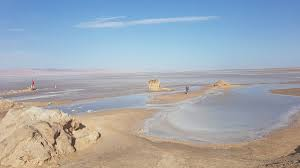
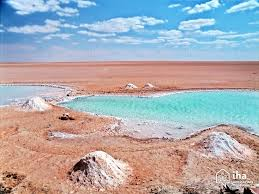
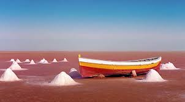
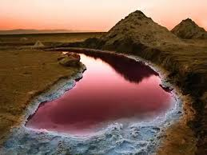